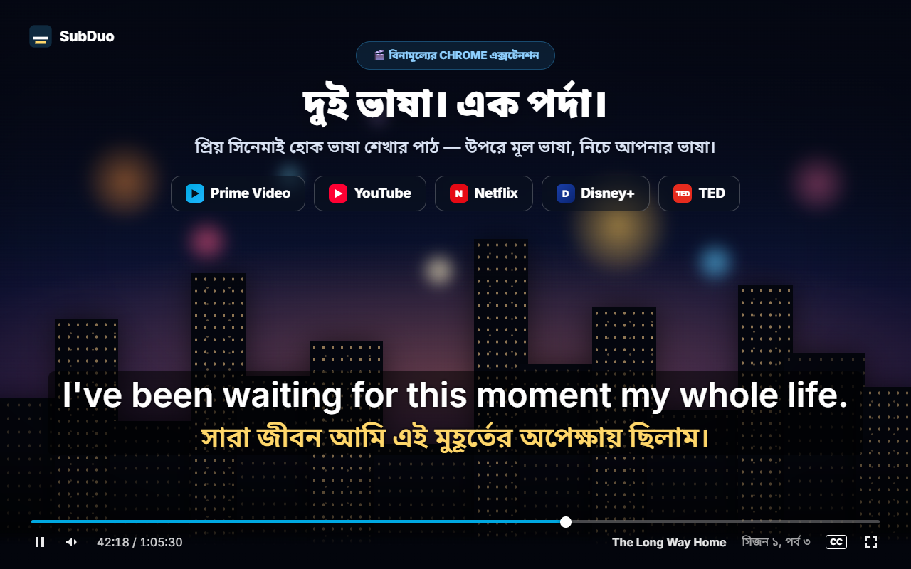
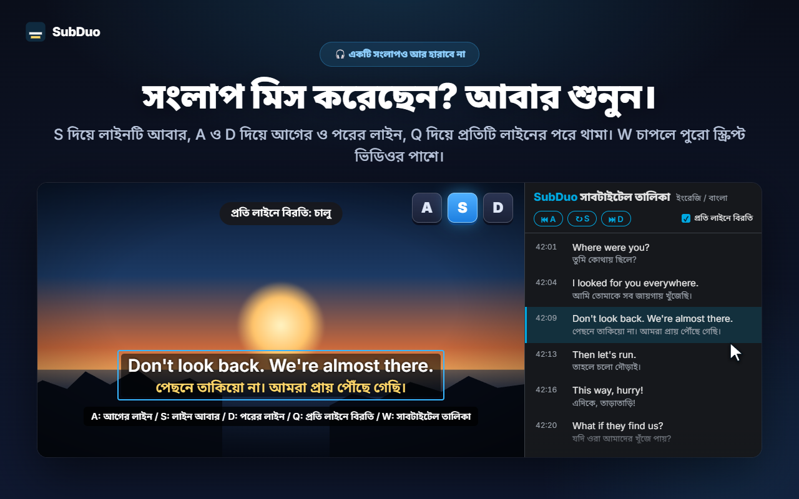
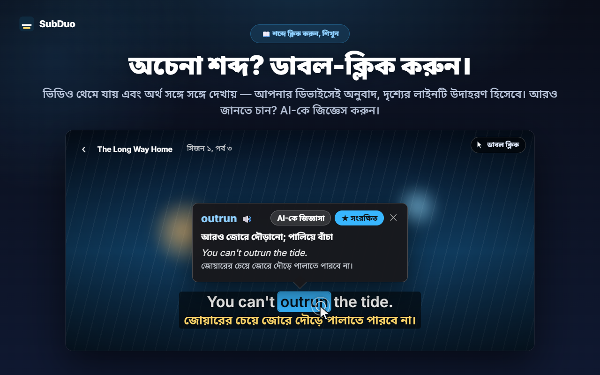
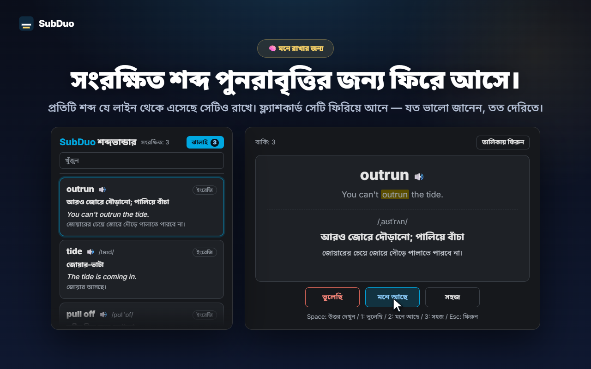

যেকোনো দুটি সাবটাইটেল ভাষা
ভিডিও চালু হলেই সাইটের সব সাবটাইটেল ট্র্যাক শনাক্ত হয়, YouTube-এর স্বয়ংক্রিয়ভাবে তৈরি সাবটাইটেলসহ। প্রতিটি লাইনের জন্য একটি ভাষা বাছুন, অথবা একটি লাইন লুকিয়ে রাখুন।
SubDuo একসঙ্গে দুই ভাষার সাবটাইটেল দেখায় — উপরে মূল ভাষা, নিচে আপনার ভাষা। কোনো শব্দে ডাবল-ক্লিক করলেই অর্থ দেখুন, এক কী চেপে লাইন আবার শুনুন, আর যা শিখছেন তা বিল্ট-ইন শব্দভান্ডারে রেখে দিন।
প্রতিটি সাইটের নিজস্ব সাবটাইটেল ব্যবহার করে · অ্যাকাউন্ট লাগে না · সাবটাইটেল আপনার ব্রাউজারেই থাকে
স্ট্রিমিং প্লেয়ার একবারে একটিই সাবটাইটেল ভাষা দেখায়। SubDuo যোগ করে দ্বিতীয়টি — সঙ্গে তা থেকে শেখার টুলও।
এক্সটেনশনের আসল স্ক্রিন, আপনার ভাষায়।

ভিডিওটিতে যে সাবটাইটেল ট্র্যাক আছে, তার যেকোনো দুটি বেছে নিন — উপরে মূল ভাষা, নিচে আপনার ভাষা। সাবটাইটেল যেখানে খুশি টেনে সরান, কোনো লাইনের উপর স্ক্রল করে আকার বদলান, আর ডান-ক্লিক করে রং, স্বচ্ছতা বা ঝাপসা ভাব ঠিক করুন।

S চেপে লাইনটি আবার শুনুন, A ও D দিয়ে আগে-পরে যান, আর Q দিয়ে প্রতিটি লাইনের পরে নিজে থেকে থামান। W চাপলে Chrome-এর সাইড প্যানেলে সাবটাইটেল তালিকা খোলে — দুই ভাষায়, লাইন ধরে ধরে — যেকোনো সারিতে ক্লিক করে সেখানে চলে যান।

ভিডিও থেমে যায় এবং একটি কার্ডে সঙ্গে সঙ্গে অর্থ দেখায় — Chrome-এর নিজস্ব অনুবাদক দিয়ে আপনার ডিভাইসেই অনুবাদ, উদাহরণ হিসেবে দৃশ্যেরই লাইন। Alt+টেনে বাক্যাংশ বাছুন। প্রসঙ্গ অনুযায়ী অর্থ, উচ্চারণ ও উদাহরণ বাক্যের জন্য “AI-কে জিজ্ঞাসা” চাপুন।

প্রতিটি সংরক্ষিত শব্দের সঙ্গে থাকে যে লাইন থেকে সেটি এসেছে। শব্দভান্ডারে খুঁজুন ও ভাষা অনুযায়ী ছাঁকুন, উচ্চারণ শুনুন, আর ফ্ল্যাশকার্ডে ঝালাই করুন — যে শব্দ যত ভালো জানেন, সেটি তত দেরিতে ফিরে আসে।
অ্যাকাউন্ট নেই, সেটআপের ঝামেলা নেই। ইনস্টল করে প্লে চাপুন।
Chrome ওয়েব স্টোর থেকে SubDuo ইনস্টল করুন, তারপর Prime Video, YouTube, Netflix, Disney+ বা TED-এ একটি ভিডিও চালান।
SubDuo আইকনে ক্লিক করে উপরের লাইনের জন্য একটি আর নিচের লাইনের জন্য একটি সাবটাইটেল ভাষা বেছে নিন। তালিকায় শুধু ভিডিওটিতে থাকা ট্র্যাকগুলোই দেখায়।
শব্দে ডাবল-ক্লিক করে অর্থ দেখুন, A, S বা D চেপে লাইন আবার শুনুন, আর পপআপ থেকে শব্দভান্ডার খুলুন।
যাঁরা দেখতে দেখতে শেখেন এবং চান দরকার না পড়া পর্যন্ত সাবটাইটেল যেন বাধা না হয় — তাঁদের জন্যই তৈরি।
ভিডিও চালু হলেই সাইটের সব সাবটাইটেল ট্র্যাক শনাক্ত হয়, YouTube-এর স্বয়ংক্রিয়ভাবে তৈরি সাবটাইটেলসহ। প্রতিটি লাইনের জন্য একটি ভাষা বাছুন, অথবা একটি লাইন লুকিয়ে রাখুন।
শব্দে ডাবল-ক্লিক বা Alt+ক্লিক করুন, অথবা বাক্যাংশের জন্য Alt+টানুন। প্লেব্যাক থেমে যায় এবং অনুবাদ ভিডিওর উপরে দেখায় — আপনার ডিভাইসেই।
প্রসঙ্গ অনুযায়ী অর্থ, উচ্চারণ ও উদাহরণ বাক্য, আপনার প্রদর্শনের ভাষায়। দিনে 20টি পর্যন্ত ব্যাখ্যা, বিনামূল্যে।
এক ক্লিকে শব্দ সংরক্ষণ করুন, খুঁজুন, ভাষা অনুযায়ী ছাঁকুন এবং 🔊 দিয়ে উচ্চারণ শুনুন। যে শব্দ আগেই জানেন, ফ্ল্যাশকার্ড সেগুলো বেশি বিরতিতে আনে।
A দিয়ে আগের লাইন, S দিয়ে আবার, D দিয়ে পরের লাইন। Q চাপলে প্রতিটি লাইনের পরে বিরতি। নিজেকে যাচাই করতে একটি লাইন ঝাপসা করুন, তারপর মাউস রেখে মিলিয়ে নিন।
ভিডিওর পাশে দুই ভাষায় প্রতিটি লাইন। চলমান লাইনটি হাইলাইট থাকে; যেকোনো সারিতে ক্লিক করে সেখানে চলে যান। খুলতে W চাপুন।
টেনে সরান, স্ক্রল করে লাইনের আকার বদলান, তীরচিহ্ন দিয়ে অল্প সরান, বাম, মাঝখান বা ডানে সাজান। প্রতিটি লাইনের রং, স্বচ্ছতা ও ঝাপসা ভাবের জন্য ডান-ক্লিক করুন।
YouTube-এ বড় সাবটাইটেল, Netflix-এ হালকা — সেটিং প্রতিটি সাইটের জন্য আলাদা সংরক্ষিত হয় এবং আপনার Chrome-এর মাধ্যমে সিঙ্ক হয়।
মেনু, অনুবাদ ও AI-এর ব্যাখ্যা আপনার বেছে নেওয়া প্রদর্শনের ভাষায় দেখায়, যা Chrome-এর ভাষা থেকে আলাদা হতে পারে।
প্রতিটি সাইট যে সাবটাইটেল ফাইল আগে থেকেই আপনার ব্রাউজারে পাঠায়, SubDuo সেগুলো পড়ে সেখানেই দেখায়। বাইরে যায় কেবল সেই বাক্যাংশ, যেটি নিয়ে আপনি AI-কে জিজ্ঞাসা করতে চান, তার সাবটাইটেল লাইনসহ।
সাবটাইটেল আপনার ব্রাউজারেই প্রক্রিয়া করে দেখানো হয়। আপনার সেটিং, শব্দভান্ডার ও দেখার ইতিহাস ডেভেলপারের কাছে পাঠানো হয় না। শব্দের অনুবাদ Chrome-এর নিজস্ব অনুবাদক দিয়ে আপনার ডিভাইসেই হয়।
আপনি “AI-কে জিজ্ঞাসা” চাপলে বাছাই করা বাক্যাংশ, তার সাবটাইটেল লাইন ও পর্দার অন্য লাইনটি, ভাষার কোড এবং একটি এলোমেলো ডিভাইস আইডি (দৈনিক সীমার জন্য) SubDuo সার্ভারে যায়, যা ব্যাখ্যার জন্য OpenAI-কে অনুরোধ করে। সেবা চালাতে আপনার IP ঠিকানা প্রক্রিয়া করা হয়।
সাইন আপ করতে হয় না। এক্সটেনশনে কোনো বিজ্ঞাপন বা অ্যানালিটিক্স নেই।
সেটিং ও শব্দভান্ডারের জন্য “storage”, আপডেটের পরে খোলা ট্যাবে আবার সংযোগের জন্য “scripting”, সাবটাইটেল তালিকার জন্য “sidePanel”, আর শুধু সমর্থিত পাঁচটি সাইটে প্রবেশাধিকার।
Chrome ওয়েব স্টোর থেকে কয়েক সেকেন্ডেই ইনস্টল